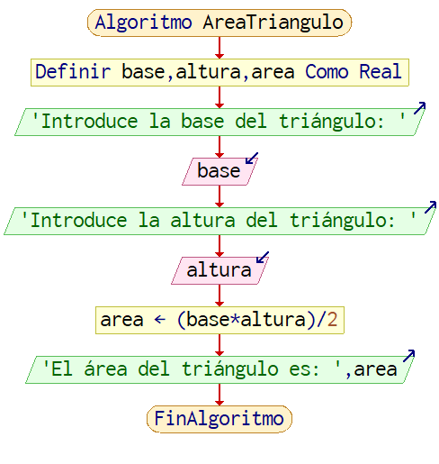

Ejercicio 1: Calcular el Área de un Triángulo
Pistas Claves:
- Necesitarás pedirle al usuario dos datos: la base y la altura.
- Recuerda que la fórmula es: (base * altura) / 2.
- Asegúrate de convertir las entradas del usuario a números (pueden ser decimales).
Pseudocódigo
Algoritmo AreaTriangulo
Definir base,altura,area Como Real
Escribir 'Introduce la base del triángulo: '
Leer base
Escribir 'Introduce la altura del triángulo: '
Leer altura
// 2. Calcular el área
area <- (base*altura)/2
// 3. Mostrar el resultado
Escribir 'El área del triángulo es: ',area
FinAlgoritmoDiagrama de Flujo

Código Python
# 1. Pedir los datos al usuario
base = float(input("Introduce la base del triángulo: "))
altura = float(input("Introduce la altura del triángulo: "))
# 2. Calcular el área
area = (base * altura) / 2
# 3. Mostrar el resultado
print(f"El área del triángulo es: {area}")